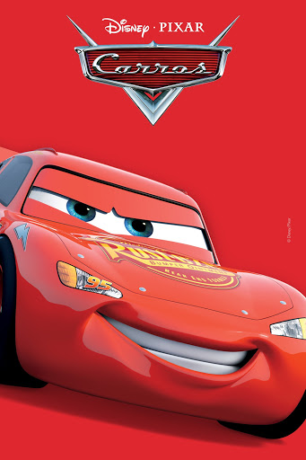

somos uma equipe especializada em catalogos de filmes
Depois de dominar os ringues, Adonis Creed tem prosperado com sua carreira e família. Quando um amigo de infância e ex-prodígio do boxe, Damian, ressurge após longa sentença na prisão, o campeão fica ansioso para provar que merece sua chance. O confronto entre ex-amigos é mais do que apenas uma luta. Para acertar as contas, Adonis deve colocar seu futuro em risco para enfrentar Damian, um lutador que não tem nada a perder.
Ao viajar para a Califórnia, o famoso carro de corridas Relâmpago McQueen se perde e vai parar em Radiator Springs, uma cidadezinha na Rota 66. Ele conhece novos amigos e aprende lições que mudam sua forma de encarar a vida
A saga Transformers se baseia em uma guerra intergaláctica entre os robôs alienígenas Autobots e Decepticons, que chegam à Terra buscando uma fonte de energia. Em geral, a trama envolve a luta pela sobrevivência dos heróis Autobots, muitas vezes com a ajuda de humanos, que precisam lidar com as ameaças dos vilões Decepticons, que desejam dominar o planeta e o universo